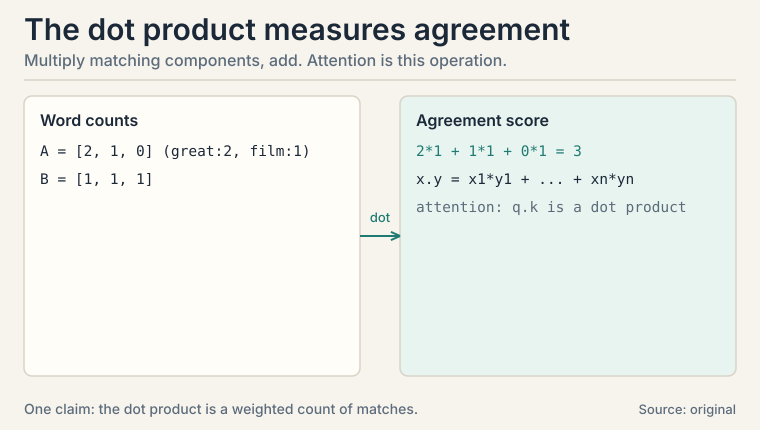
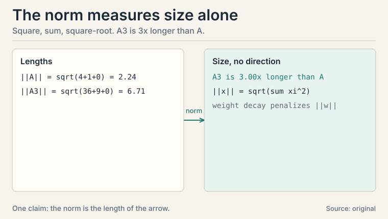
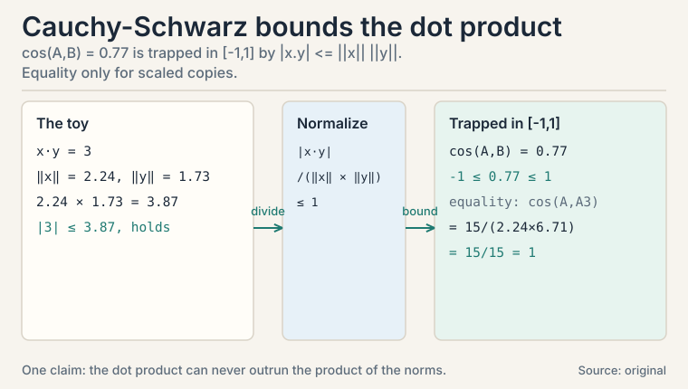
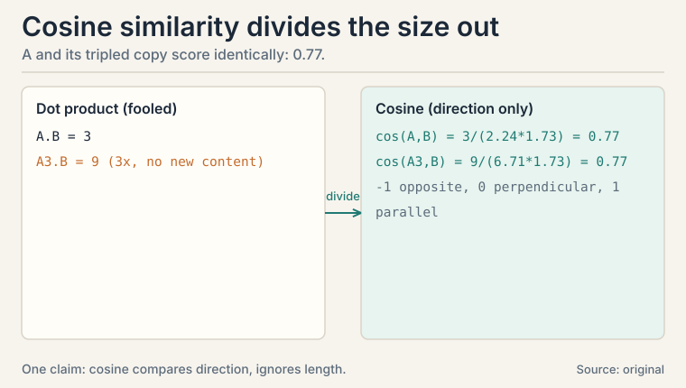
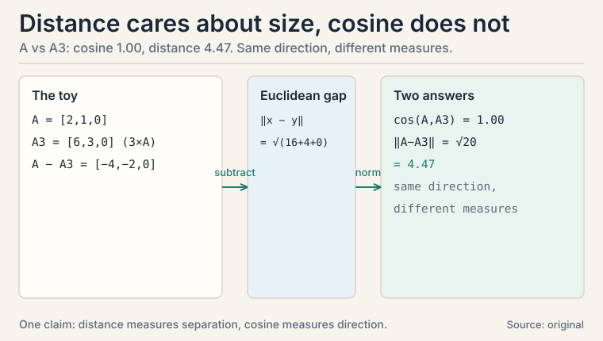
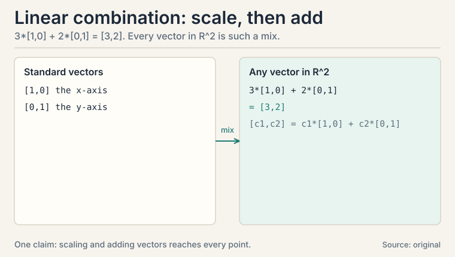
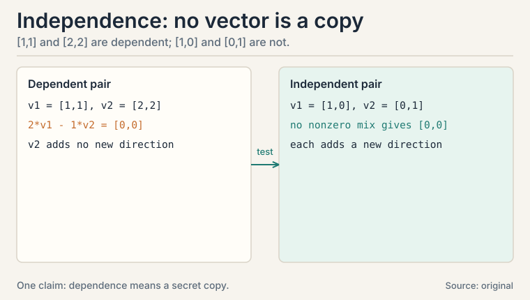
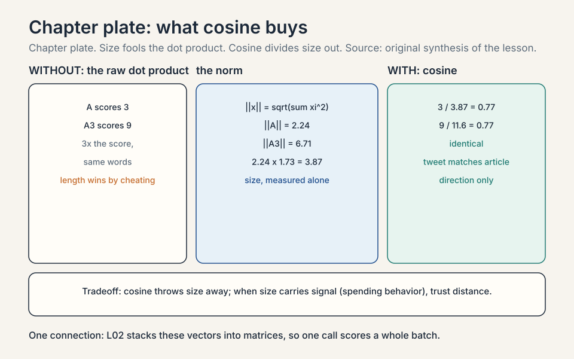

Lecture 1: Vectors as Data
Video blocked (ad-blocker or local file mode).
Watch on YouTubeVideo not loading? Watch on YouTube
The NPTEL lecture this chapter follows: vectors, dot products, and linear independence.
The task: turn the world into numbers a machine can compare
A machine learning model cannot read a review, look at a photo, or hear a word. It can only do arithmetic. So every modern ML system starts with the same move: turn each object into a list of numbers. That list is a vector.
movie review --> [ 0.9, -0.4, 0.2 ] "glowing review" movie review --> [-0.8, 0.7, -0.3 ] "angry review" photo pixel --> [ 214, 96, 31 ] orange-red pixel
A vector is an ordered list of numbers. Order matters: [1, 2] and [2, 1] are different vectors. Each number is a component. A vector with n components lives in a space called R^n, read “R n”: R^2 is the plane, R^3 is ordinary 3-D space, and language models live in R^12,288. The vectors that turn words into lists of numbers are called embeddings, and attention scores in the transformer are dot products of embeddings (CS229S L02).
This lesson builds the three tools every ML system uses on vectors: multiply two vectors together to measure agreement, measure a vector’s size, and compare directions while ignoring size.
First attempt: count shared words
The simplest way to compare two documents is to count words. Make a vector of word counts and compare the counts.
review A: "great film, great acting" --> [ great:2, film:1, boring:0 ] review B: "great film, boring plot" --> [ great:1, film:1, boring:1 ]
How similar are A and B? The shared words are “great” and “film”. Count them with weights: multiply the counts component by component and add.
agreement = 2*1 + 1*1 + 0*1 = 2 + 1 + 0 = 3
This operation has a name: the dot product. For vectors x = [x1, x2, …, xn] and y = [y1, y2, …, yn],
x . y = x1*y1 + x2*y2 + ... + xn*yn
It is the single most used operation in machine learning. Attention compares queries to keys with it. Neurons sum weighted inputs with it. Classifiers score examples with it.
But raw counts hide a trap. Watch what happens when one review is just longer.
Where counts break: size confuses the comparison
Take review A and a copy of it pasted three times, call it A3.
A: [2, 1, 0] A3: [6, 3, 0] (same opinions, three times the words) B: [1, 1, 1]
Score each against B with the dot product:
A . B = 2*1 + 1*1 + 0*1 = 3 A3 . B = 6*1 + 3*1 + 0*1 = 9
A3 scores three times higher, but it says nothing new. The dot product mixed two things together: how much the directions agree, and how long the vectors are. A long vector always wins, even when it carries no extra meaning.
So we need a separate measure of size: the norm. The norm of a vector is the square root of the sum of squared components:
||x|| = sqrt(x1^2 + x2^2 + ... + xn^2) ||A|| = sqrt(4 + 1 + 0) = sqrt(5) = 2.24 ||A3|| = sqrt(36 + 9 + 0) = sqrt(45) = 6.71
(||x|| is the notation for “the norm of x”.) The norm is the length of the arrow if you draw the vector. A3 is three times longer than A, which is exactly the trap: the dot product rewarded length.
Subchapter: the dot product, by hand
Slow the operation down. Two vectors meet component by component. Each pair multiplies: a large-times-large pair contributes a lot, a large-times-small pair contributes little, and opposite signs subtract. The sum is the total agreement.
x = [ 3, -1, 2 ], y = [ 2, 4, 1 ] x . y = 3*2 + (-1)*4 + 2*1 = 6 - 4 + 2 = 4
Read 4: mostly agreement, partly canceled by the -1 vs 4 clash. Now the zero case: x = [1, 0], y = [0, 1]. Dot product 0. The vectors are perpendicular: no shared direction at all. And the negative case: x = [1, 1], y = [-1, -1]. Dot product -2: pure opposition.
Three facts to carry. The dot product is symmetric: x.y = y.x. It is linear in each argument: doubling x doubles the answer. And it is zero exactly when the vectors are perpendicular, which is why “orthogonal” appears everywhere in ML: it means “these two carry no shared signal.”

Subchapter: the norm, by hand
The norm answers one question: how big is this vector, ignoring where it points. Square each component (signs vanish: -3 and 3 contribute equally), add, take the square root.
v = [3, -4]: ||v|| = sqrt(9 + 16) = sqrt(25) = 5
That is the 3-4-5 triangle: the norm is literally the arrow’s length. Two norms matter in ML beyond this default (the L2 norm). The L1 norm sums absolute values: ||v||_1 = |3| + |-4| = 7. The max norm takes the largest absolute component: 4. The L1 norm encourages sparsity (many exact zeros), which is why L1 regularization selects features. The L2 norm encourages small weights everywhere, which is why L2 regularization (weight decay) is the default.
Norms also police training. Gradient clipping rescales a gradient (the direction of steepest increase of the loss) when its norm exceeds a threshold: if ||g|| > 5, replace g with 5 * g / ||g||. Without this, one bad batch can detonate the weights. The norm is the fuse box.

Subchapter: unit vectors and normalization
Normalization divides a vector by its own norm, producing a unit vector: length exactly 1, same direction as the original. The hat marks it: v-hat = v / ||v||.
v = [3, -4], ||v|| = 5 v-hat = [3/5, -4/5] = [0.6, -0.8] check: sqrt(0.36 + 0.64) = sqrt(1) = 1
Normalization is the standard first step before cosine comparison: for unit vectors the dot product IS the cosine, since both norms are 1. It also stabilizes training: optimizers behave better when inputs live on the same scale. Decision rule: normalize when only direction matters and when feature scales differ wildly.
Subchapter: Cauchy-Schwarz, why cosine stays between -1 and 1
The lesson asserted that cosine similarity lands between -1 and 1. That is not a convention. It is a theorem. The Cauchy-Schwarz inequality says the dot product can never outrun the product of the norms:
|x . y| <= ||x|| * ||y||
Check it on the toy: |3| <= 2.24 * 1.73 = 3.87. True, with room to spare. Divide both sides by the norms (valid only when both norms are nonzero) and the cosine is trapped:
|(x . y) / (||x|| * ||y||)| <= 1
Equality holds exactly when one vector is a scaled copy of the other: cos(A, A3) = (A . A3) / (||A|| ||A3||) = 15 / (2.24 * 6.71) = 15 / 15 = 1. That also explains why cosine(A, B) equaled cosine(A3, B) at 0.77: a positive scale factor cancels out of the ratio. Interviewers use this inequality to bound inner products in proofs about attention and kernels. Know it by name.

The key question
How do you compare two vectors by direction alone, so that a long vector and a short vector pointing the same way count as identical?
Subchapter: cosine similarity, by hand
The fix is one division. Divide the dot product by both norms. The result is the cosine similarity, a number between -1 and 1 that measures direction only:
cosine(x, y) = (x . y) / (||x|| * ||y||) cosine(A, B) = 3 / (2.24 * 1.73) = 3 / 3.87 = 0.77 cosine(A3, B) = 9 / (6.71 * 1.73) = 9 / 11.6 = 0.77
Identical. The length canceled out, as it should: A and A3 point the same way. Cosine similarity is why a short tweet and a long article about the same topic can be recognized as the same topic. Search engines and recommendation systems live on this ratio.
The name comes from geometry: the dot product also equals ||x|| * ||y|| * cos(theta), where theta is the angle between the two vectors. Parallel vectors give 1, perpendicular vectors give 0, opposite vectors give -1.
The trap inside the fix: cosine throws away size, and sometimes size is the signal. A long detailed review may deserve more weight than a two-word one. A common compromise: use cosine for ranking, but keep the norm as a separate feature. Know what you discarded.

Subchapter: the zero vector, where cosine breaks
The cosine formula has a precondition: both vectors must be nonzero. Dividing by zero is undefined, and the norm of the zero vector [0, 0, 0] (every component zero) is 0.
Work it: cosine([0,0,0], [1,0,0]) = 0 / (0 * 1) = 0/0. Undefined. The zero vector has no direction, so there is nothing to compare. A document with no tokens embeds as the zero vector: scoring it against anything is meaningless.
Production rule: guard the pipeline before scoring. Skip empty documents, or special-case them (assign score 0 or drop them), before computing cosine. The “Rank documents by topic: cosine” rule below only applies to real, nonzero vectors. An unguarded division by a zero norm is a silent NaN (not a number): the code runs and the ranking breaks.
Subchapter: Euclidean distance vs cosine, a worked choice
The Euclidean distance ||x - y|| measures separation in the space, size included:
A = [2, 1, 0], B = [1, 1, 1] A - B = [1, 0, -1] ||A - B|| = sqrt(1 + 0 + 1) = sqrt(2) = 1.41
Now compare A with its tripled copy A3. Cosine says they are identical: 1.00. Distance says they are far apart: ||A - A3|| = ||[-4, -2, 0]|| = sqrt(16 + 4) = sqrt(20) = 4.47. Same direction, large separation. The two measures disagree on purpose: they ask different questions.
Decision rule, one line each:
- Rank documents by topic: cosine. Length is noise.
- Cluster points where magnitude matters (spending behavior, pixel intensity): Euclidean distance. Length is signal.
- Compare inside a model (attention scores, neuron sums): dot product. Both direction and magnitude carry weight, and no division is needed.
Three measures, three questions. Picking the wrong one is a silent bug: the code runs, the numbers look sane, and the rankings are wrong.

Building blocks: linear combination and independence
Two more ideas complete the vector toolkit. Each is one small step past the last.
Subchapter: linear combination
A linear combination mixes vectors by scaling and adding. For scalars c1, c2 and vectors v1, v2, the vector c1v1 + c2v2 is a linear combination. The lecture’s own example: in R^2, every vector [c1, c2] is c1[1,0] + c2[0,1]. The vectors [1,0] and [0,1] are the standard vectors. They are the pure axes.
3 * [1, 0] + 2 * [0, 1] = [3, 0] + [0, 2] = [3, 2]
Every point in the plane is reachable this way. The set of all points reachable from a set of vectors is their span. The span of [1,0] and [0,1] is the whole plane. The span of [1,1] alone is the diagonal line. Span answers: how much room do these vectors cover.

Subchapter: linear independence
Linear independence asks whether one vector in a set is secretly a copy of the others. Vectors v1, …, vk are dependent if some mix c1v1 + … + ckvk equals the zero vector with at least one nonzero coefficient. The lecture’s example: [1,1] and [2,2] are dependent, because 2[1,1] - 1[2,2] = [0,0]. One is just twice the other, so it adds no new direction.
Why does this matter for ML? A dataset where one feature is twice another (say, price in dollars and price in cents) carries no extra information. The second feature is a dependent vector. It wastes a dimension and, as L09 shows, it can make regression break: the normal equation goes singular.
The test: stack the vectors as rows of a matrix and row-reduce. A zero row means dependence. The lecture works this on [1,1,8,1], [1,0,3,0], [3,1,14,1] and finds a zero row: dependent [uncertain: exact lecture arithmetic not recovered].

Subchapter: embeddings, where vectors learn their components
So far the components were given: word counts, pixel values. The modern move is to learn them. An embedding is a vector whose components are trained, not counted. Word2vec trained embeddings where king - man + woman lands near queen: directions in the space encode meaning. The components have no names a human assigned. Position 47 tracks whatever the training found useful.
This closes the loop on the lesson. Embeddings are compared with the dot product (attention scores) and with cosine similarity (retrieval ranking). Their norms are regularized during training. And if two embedding dimensions become dependent, the model wastes capacity: the same redundancy this lesson flagged in count vectors.
| Tool | Formula | What it measures |
|---|---|---|
| Dot product | x . y = sum of xi*yi | Agreement, but mixed with size |
| Norm | ||x|| = sqrt(sum of xi^2) | Size only |
| Cosine similarity | (x . y) / (||x|| ||y||) | Direction only, between -1 and 1 |
| Linear combination | c1v1 + … + ckvk | Mixing vectors by scaling and adding |
| Independence | no nonzero mix gives zero | Whether a vector adds a new direction |
What is used where: the real systems
| Math idea | Where it appears | Why there |
|---|---|---|
| Dot product | Attention scores q.k (CS229S L02) | every transformer layer compares queries to keys |
| Dot product | Neuron: w.x + b | weighted sum is the neuron’s whole job |
| Cosine similarity | Vector search (FAISS, Pinecone) | rank by direction; a tweet matches an article |
| Cosine similarity | Contrastive loss (CLIP) | pull matching pairs to cosine 1 |
| Norm | Weight decay (L2) | penalize ||w|| to keep weights small |
| Norm | Gradient clipping | rescale when ||g|| exceeds the threshold |
| Independence | Feature design | duplicate features break L09’s normal equation |

A vector is an ordered list of numbers, like [0.9, -0.4, 0.2]. ML uses vectors because arithmetic is all a computer can do: a review, a pixel, or a word must become numbers before a model can touch it. Embeddings turn words into vectors in R^12,288, and attention scores are dot products between them. Because each position has a fixed meaning. In a word-count vector, position 1 might mean “great” and position 2 “boring”. Swapping them swaps the meaning. In an embedding, position 47 tracks some learned property. Scrambling positions destroys the code.
Take x = [3, -1, 2], y = [2, 4, 1]. Multiply matching components: 32 = 6 (strong agreement), -14 = -4 (clash: opposite signs subtract), 2*1 = 2 (mild agreement). Sum: 6 - 4 + 2 = 4. The total says “mostly agreement, partly canceled.” Each product is one feature’s vote. The sum is the election. The vectors are perpendicular: they share no direction. In ML this reads as “no shared signal.” Attention exploits it. Softmax turns scores into weights that sum to 1, so a near-zero score becomes a near-zero weight and the token is ignored.
Use the dot product inside the model: attention scores, neuron sums, classifier margins. Use cosine similarity when comparing finished vectors, like ranking search results or measuring how close two embeddings are. In the worked toy, A and its tripled copy A3 scored 3 and 9 by dot product but both scored 0.77 by cosine. Cosine ignores the length. The dot product does not. Yes. A negative dot product means the vectors point in opposing directions: mostly disagreement. Cosine similarity maps this to -1. In attention this matters: a strongly negative score becomes a near-zero weight after softmax, so the model ignores that token.
Both, about different questions. Cosine asks “do they point the same way”: yes, so the topic matches. Distance asks “are they at the same place”: no, one review is three times longer. For ranking documents by topic, trust cosine. For clustering where size matters, like spending behavior, trust distance. The Cauchy-Schwarz inequality guarantees cosine stays in [-1, 1]: the dot product can never outrun the product of the norms. Normalization divides each vector by its norm, making every vector length 1: v-hat = v / ||v||. For [3, -4] that is [0.6, -0.8]. Unit vectors turn the dot product directly into the cosine, since both norms are 1. It also stops one giant feature from dominating the comparison.
The default L2 norm measures the arrow’s length: sqrt of summed squares. [3, -4] has norm 5. The L1 norm sums absolute values (7 here) and encourages sparsity: many exact zeros, which is why L1 regularization selects features. The L2 norm spreads shrinkage across all components, which is why L2 (weight decay) is the default regularizer. Gradient clipping. If a gradient’s norm exceeds a threshold, rescale it to the threshold. One bad batch can otherwise produce a giant gradient that detonates the weights. The norm is the fuse box of training.
It means no feature is a copy of the others. [1,1] and [2,2] are dependent because 2*[1,1] - [2,2] = [0,0]. In a dataset, price-in-dollars and price-in-cents are dependent features: the second adds no direction. Dependent features waste dimensions and can make regression singular, which L09 demonstrates. Stack them as rows of a matrix and row-reduce. If any row becomes all zeros, the set is dependent. The lecture works this exact procedure on [1,1,8,1], [1,0,3,0], [3,1,14,1] and finds a zero row: dependent.
A word-count vector has human-assigned components: position 3 means “boring.” An embedding’s components are learned: training adjusts all 12,288 numbers so that useful directions emerge. Word2vec showed king - man + woman lands near queen: the space itself encodes meaning. Same vector arithmetic, but the machine chose the axes. Each dimension is one learned property, and language has thousands of overlapping properties: tense, topic, sentiment, formality. Too few dimensions and independent meanings collide into dependent mush. The dimension is a capacity choice, and these lessons’ tools (norms, cosine, independence) are how you audit whether the capacity is well used.
Cosine. Articles vary wildly in length, and the dot product would rank long articles above short relevant ones: the A3 trap at product scale. Compute embeddings once, store them, and rank candidates by cosine similarity to the current article. Keep the norms as a secondary signal if length correlates with quality in your domain. Precompute and index. Exact cosine over millions of vectors is too slow per query, so use an approximate nearest-neighbor index (FAISS, ScaNN): it partitions the space so each query checks a fraction of candidates. The math is still cosine. The index just skips the hopeless comparisons.
Recap: the whole lesson on one screen
- The task. Machines only do arithmetic, so objects become vectors: ordered lists of numbers.
- First attempt. Compare documents by multiplying matching word counts and adding: the dot product, x . y = 3 in the toy.
- Where it breaks. Length confuses the score: a tripled review scores 3x higher (9 vs 3) with no new content.
- Measure size separately. The norm ||x|| = sqrt(sum of squares): ||A|| = 2.24, ||A3|| = 6.71. L1 sparsifies, L2 shrinks.
- The key question. How to compare direction alone?
- The fix. Cosine similarity divides out both sizes: 0.77 for A and A3 alike. Geometry agrees: it is the cosine of the angle. It discards size, so keep the norm as a separate signal when size matters.
- The building blocks. Linear combinations mix vectors (span). Independence means no vector is a copy of the rest.
- Embeddings. Learned vectors: the machine chooses the axes. Compared with dot products and cosines, regularized by norms.
- Unit vectors and distance. Normalize to compare directions (v-hat = [0.6, -0.8]). Cauchy-Schwarz traps cosine in [-1, 1]. Euclidean distance keeps size: ||A - A3|| = 4.47 while cosine is 1.00. Pick the measure that matches the question.
- The price and the bridge. Cosine throws away size, which sometimes matters. Keep both tools. L02 turns vectors into matrices: machines that transform whole datasets at once.
Go deeper
- 3Blue1Brown, “Vectors, what even are they?” (Essence of linear algebra, ch. 1, the embed above): https://www.youtube.com/watch?v=fNk_zzaMoSs
- The NPTEL lecture for this lesson (frontmatter video): https://www.youtube.com/watch?v=Y1Gndz4sNeE
- Deisenroth, Faisal, Ong, “Mathematics for Machine Learning”, ch. 2 (free): https://mml-book.github.io: vectors, norms, dot products, independence.
- Strang, “Introduction to Linear Algebra”, ch. 1: the geometric view.
Official sources and further reading
Official: - “Essential Mathematics for Machine Learning” playlist, Lecture 01 (this lesson’s video): paper - NPTEL course page (111107137): https://nptel.ac.in/courses/111107137
Further reading: - Deisenroth, Faisal, Ong, “Mathematics for Machine Learning”, ch. 2 (free): - vectors, norms, dot products, independence. - Strang, “Introduction to Linear Algebra”, ch. 1: the geometric view.
Caveats. The lecture-1 transcript was recovered in full. Its vector definitions, dot product, linear combination, and independence examples are quoted above as the lecture presents them. The cosine-similarity framing is standard material consistent with Lectures 01/07. The exact toy numbers are the lesson’s own. [uncertain]
Connections to the other courses
- CS229S L02: attention scores are dot products of query and key embeddings. This lesson is the arithmetic underneath.
- CS336: token embeddings are vectors in R^d. Cosine similarity ranks nearest neighbors in embedding space.
- CS229 L10: PCA starts by centering data vectors. Norms measure reconstruction error.
Coverage map
Every lecture concept, and where this lesson covers it:
| Lecture concept | Covered in | Lines |
|---|---|---|
| vectors as ordered lists of numbers | The task: turn the world into numbers | l01:28-52 |
| dot product, definition and first computation | First attempt: count shared words | l01:53-84 |
| dot product by hand: symmetric, linear, zero = perpendicular | Subchapter: the dot product, by hand | l01:121-146 |
| norm as size, L2/L1/max norms, gradient clipping | Where counts break; Subchapter: the norm, by hand | l01:85-119, l01:148-172 |
| normalization, unit vectors, v-hat | Subchapter: unit vectors and normalization | l01:174-192 |
| Cauchy-Schwarz inequality, why cosine is in [-1, 1] | Subchapter: Cauchy-Schwarz | l01:193-219 |
| cosine similarity, the 0.77 toy, the size trap | The key question; cosine similarity, by hand | l01:220-254 |
| Euclidean distance vs cosine, the decision rule | Subchapter: Euclidean distance vs cosine | l01:255-286 |
| linear combination, span, standard vectors | Subchapter: linear combination | l01:292-311 |
| linear independence, dependence test, row-reduction | Subchapter: linear independence | l01:312-333 |
| embeddings: learned vs counted components | Subchapter: embeddings | l01:334-357 |
| what is used where: attention, search, norms, independence | What is used where | l01:358-371 |
| 8 interview Q&As with follow-ups | QA blocks | l01:372-419 |
| full-lesson recap | Recap | l01:420-431 |
Sources
- VIDEOEssential Mathematics for Machine Learning: Lecture 01 (Vectors)
- SUPPLEMENTDeisenroth, Faisal, Ong, Mathematics for Machine Learning, ch. 2
- SUPPLEMENTStrang, Introduction to Linear Algebra, ch. 1